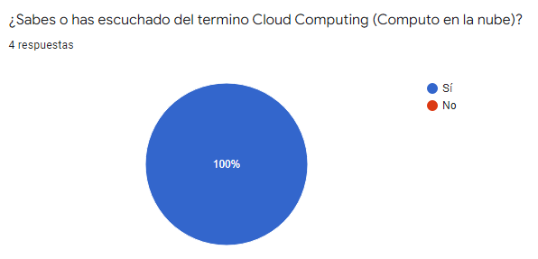
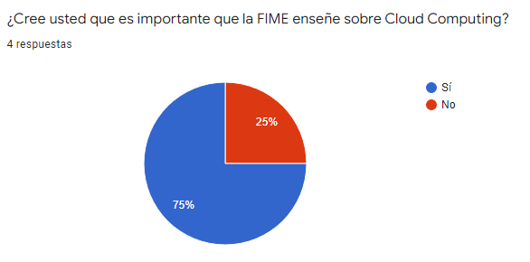
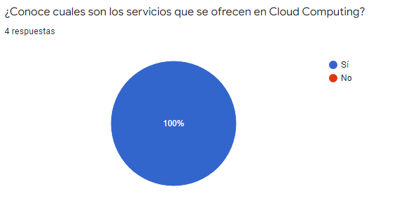
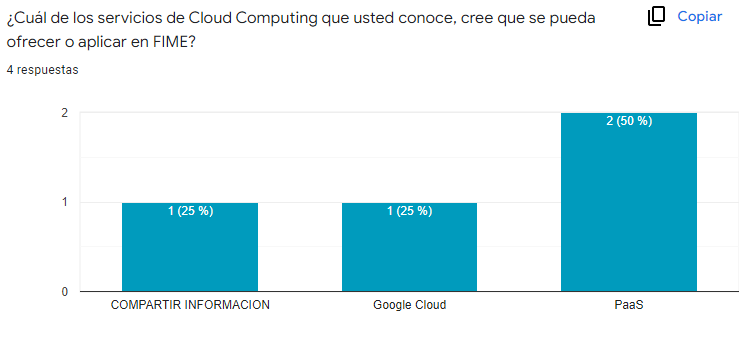
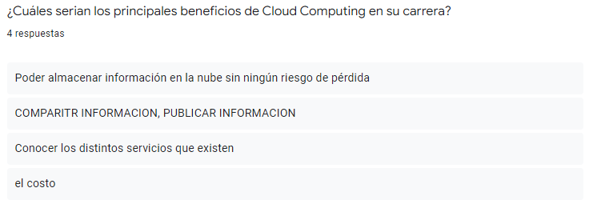
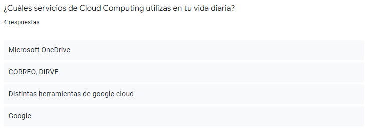
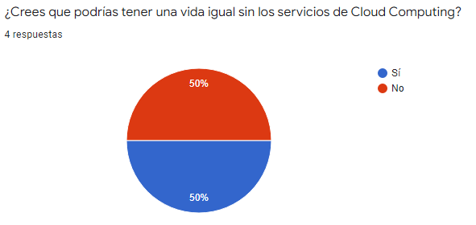
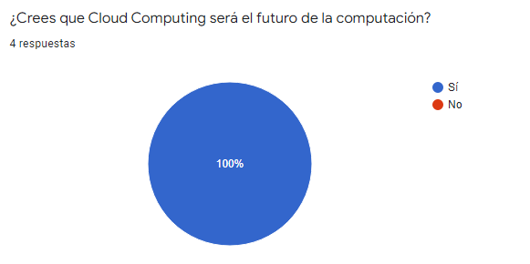

El cómputo en la nube es un modelo que permite el acceso sobre demanda a recursos compartidos de cómputo (redes, servidores, aplicaciones, servicios, etc.), de una manera fácil, rápida y con facilidades de servicio a la carta según sean las necesidades del usuario ¿Y qué significa esto? Pues simple y sencillamente que en el mundo ideal un usuario de cómputo en la nube podría llegar al extremo de sólo requerir su PC y un enlace de datos pues su infraestructura de TI, las aplicaciones que usa y aún sus datos estarán en la nube, sin que el usuario sepa dónde están exactamente y permitiéndole modificar al vuelo, y en un modelo de auto servicio, la infraestructura, aplicaciones y servicios de TI de acuerdo a sus necesidades puntuales.
Acevedo,H. 07/10/2010, ¿Que es el computo en la nube?, Revisado el 27/03/2022, Recuperado de https://www.magazcitum.com.mx/index.php/archivos/866#.YkDdl-fMLIU
La computación en la nube es un modelo de entrega donde el almacenamiento, los servidores, las aplicaciones y otros elementos se entregan por Internet. Se entregan bajo demanda como servicio, en general como pago por consumo.
Hewlett Packard Enterprise, S.F., ¿Que es la computacion en la nube?, Revisado el 27/03/2022, Recuperado de https://www.hpe.com/mx/es/what-is/cloud-computing.html
El cómputo o computación en la nube (cloud computing) es una nueva tecnología que permite utilizar software de forma remota o almacenar información en servidores utilizando para ello una conexión a internet.
La computación en la nube se basa en distintos modelos como el de IaaS (infraestructure as a service), SaaS (software as a service) o Paas (platform as a service), donde el usuario no necesita disponer de un hardware o software para poder disponer de servicios y programas informáticos, accediendo a ellos a través de internet desde sus propios dispositivos (computadoras o celulares, principalmente).
Felipe, Hostingplus. 01/02/2022. Que es el computo en la nube. Revisado el 27/03/2022 Recuperado de https://www.hostingplus.cl/blog/que-es-el-computo-en-la-nube/
Hace referencia al servicio que se brinda a personas a nivel público, es decir, se ofrecen servicios y productos Cloud usando una nube que es compartida por todos por igual.
Los recursos y servicios se gestionan por diferentes empresas, las cuales son responsables de asegurarse que todo funcione de forma adecuada referente al uso de servidores, energía, almacenamiento, entre otros.
Cuando una persona contrata una nube pública, estará haciendo uso de recursos garantizados que compró, pero que internamente están estrechamente entrelazados y dependen de la misma infraestructura que otros clientes, aunque nunca sabrán a ciencia cierta con qué clientes o sitios comparten la nube pública donde alojan su información.
Se refiere a entornos de cloud computing donde los recursos e infraestructura se dedican 100% a una empresa o corporación. Al contratar una nube privada se contrata no solo el servicio de computación en la nube, sino también el hardware, redes, dispositivos de almacenamiento y todo lo que hace al concepto de “nube”.
Esto tiene como ventaja principal mejorar la seguridad de los sistemas, redes y por sobre todo un incremento en la protección de datos, algo que la nube pública ha demostrado tener grandes carencias. Además, ofrecen una total independencia a nivel de infraestructura, algo ideal para hacerlos tolerantes a fallos relacionados con nubes públicas.
Se caracteriza por ser un mix entre las cosas que ofrece la nube pública y la privada. La nube híbrida ofrece una mezcla perfecta que permite al cliente ser dueño privado de algunos tipos de recursos, mientras que comparte otros de carácter público con diversos clientes.
Permiten escalabilidad asegurada de forma rápida, pero no traen consigo toda la complejidad y altísimos costos que implican instalar una nube privada corporativa.
Este tipo de nubes no son muy complejas, tampoco ofrecen todas las características de la nube privada, por lo que suelen usarse para hospedar servicios y aplicaciones simples, que no requieran de sincronización inteligente de datos, replicaciones globales, etc.
Se define como un servicio Cloud que es utilizado por organizaciones, empresas o proyectos que tienen objetivos sociales, políticos o culturales en común. Suele ser instalada y gestionada por las mismas organizaciones, por lo que comparte ciertas características del concepto de nube privada, aunque se le denomina “comunitaria” pues todas las organizaciones que la utilizan mantienen objetivos similares o uno por igual.
Infraestructura como servicio (IaaS): Se usa para el acceso basado en Internet a almacenamiento y capacidad informática. Es la categoría más básica de los tipos de informática en la nube y permite alquilar infraestructura de TI de un proveedor de servicios en la nube con el modelo de pago por uso.
Plataforma como servicio (PaaS): Ofrece a los desarrolladores herramientas para crear y hospedar aplicaciones web. PaaS está diseñado para dar acceso a los usuarios a los componentes que necesitan para desarrollar y utilizar con rapidez aplicaciones web o móviles a través de Internet, sin preocuparse por configurar y administrar la infraestructura de servidores, almacenamiento, redes y bases de datos subyacente.
Software como servicio (SaaS): Se usa para aplicaciones web. SaaS es un método de entrega de aplicaciones de software a través de Internet donde los proveedores de servicios en la nube hospedan y administran las aplicaciones, lo que facilita tener la misma aplicación en todos sus dispositivos a la vez porque accede a ella en la nube.
       
Los servicios de Google Cloud se pueden encontrar en este enlace.
Es el servicio centralizado de informes de vulnerabilidades y amenazas de Google Cloud. Security Command Center ayuda a fortalecer la posición de seguridad mediante la evaluación de la superficie de ataque de datos y la seguridad, proporcionando inventario y descubrimiento de elementos, identificando errores de configuración, vulnerabilidades y amenazas, y ayudando a mitigar y solucionar los riesgos.